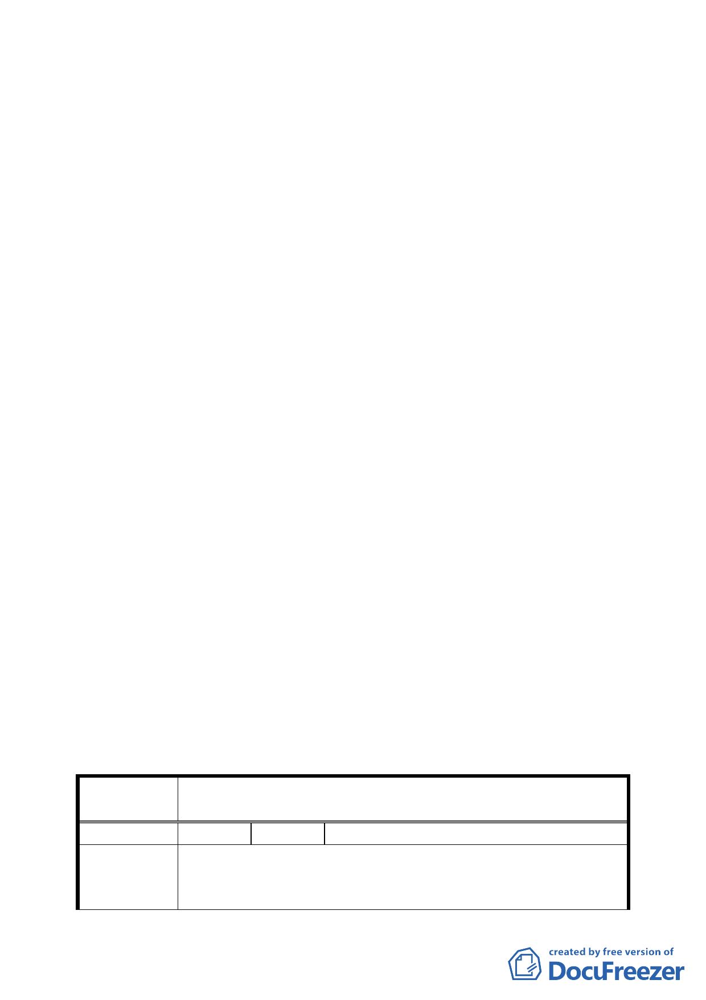

以結合，期能活化古蹟並展現臺北城歷史軌跡，請申請單
位納入後續設計考量。另環保局代表所提應實施環境影響
評估、垃圾處理空間內部化，以及節能、減廢等永續設計
之議題，亦請申請單位儘早與市府相關單位進行協調。
5.本案請申請單位臺北市政府捷運工程局會同市府交通局
及都市發展局，儘速就與會委員及各單位代表所提建議據
以修正細部計畫內容，俾提 95 年 5 月 15 日本會第 555 次
委員會議審議。屆時並請申請單位於委員會議上就今日委
員所提諸項疑慮（例如目前所提設計方案僅為概念與構
想，並非最後定案等），先作釐清與說明，以利委員會議順
利進行。
決議：
一、本案修正後通過，請申請單位確實依 95 年 5 月 10 日之專
案報告會議結論修正計畫書內容，包括人行連通設施應
平順連接（都市設計管制要點第七點），建築設計應融合
臺北舊城意象，重現臺北城歷史軌跡（都市設計管制要
點第五點）等，另垃圾「處」理空間內部化之規範，文
字併請修正為「清」理空間。
二、公民或團體所提意見決議情形詳附件綜裡表。
臺北市都市計畫委員會公民或團體所提意見綜理表
案
名
擬定臺北車站特定專用區 C1、D1 東半街廓聯合開發區（捷）
細部計畫案
編 號 １ 陳情人 交通部臺灣鐵路管理局
1.市府捷運局自接辦「中正國際機場聯外捷運系統」臺北段
陳 情 理 由 工程規劃，就權利、義務部分與本局協商至今尚未達成共
識，市府為配合捷運局推動「機場捷運」建設及創造 C1 用
二〇